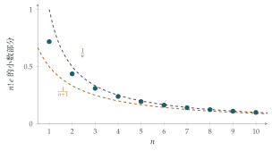

本节会用到两道题目。第一道出自 1997 年，证明 \(e\) 是无理数（irrational number）。第二道出自 2024 年，把同一个想法用得更巧妙，证明 \(e^2\) 是无理数，而这原来确实困难得多。
STEP III 1997，第 7 题
继续之前，请先阅读题目（原题为英文）。题目载于 STEP Support Programme 的题目资料库： step.maths.org/questions/97-s3-q7
STEP III 2024，第 7 题
继续之前，请先阅读题目（原题为英文）。题目载于 OCR 提供下载的 2024 年 STEP 试卷（zip 文件）内的 STEP III 试卷： www.ocr.org.uk/Images/725753-2024-past-papers.zip
引子
在 第 1.3 节 中，我们证明了 \(\sqrt2\) 是无理数，用的是 \(\sqrt2\) 满足一条简单方程 \(x^2 = 2\) 这个事实。但就我们所知，\(e\) 并不满足任何这样的方程。我们手上只有它的级数（series）： \[e = 1 + \frac{1}{1!} + \frac{1}{2!} + \frac{1}{3!} + \cdots.\] 一个级数怎能告诉你某个数不是分数？
答案是数论（number theory）中最有用的想法之一：整数（integer）不可能严格介乎 \(0\) 与 \(1\) 之间。如果你能证明某个量是整数，同时又严格介乎 \(0\) 与 \(1\) 之间，就得出矛盾（contradiction）。本节的一切，都是这个主题的变奏。
动笔之前
假设 \(e = p/q\)。把 \(e\) 乘以 \(q\) 会得到整数。那么乘以 \(q!\) 又会对 \(e\) 的级数的每一项有甚么影响？
只要 \(k \leq q\)，把 \(\dfrac{1}{k!}\) 乘以 \(q!\) 都会得到整数。因此 \(q!\,e\) 可分成整数部分（首 \(q+1\) 项）和“尾部”（tail，即其后的所有项）。若 \(e = p/q\)，则 \(q!\,e\) 本身是整数，所以尾部也必定是整数。我们的计划，就是证明尾部严格介乎 \(0\) 与 \(1\) 之间。
逐步解题
阶段 1 热身题：\(e\) 是无理数
级数 \(b_n\) 是等比级数（geometric series），首项和公比都是 \(\frac{1}{n+1}\)，所以 \[b_n = \frac{1/(n+1)}{1 - 1/(n+1)} = \frac{1}{n}.\]
逐项比较 \(a_n\) 和 \(b_n\)。哪一个较大？
两者的首项相等。其后，\((n+1)(n+2) > (n+1)^2\)，而一般来说，当 \(k \geq 2\) 时 \((n+1)(n+2)\cdots(n+k) > (n+1)^k\)，所以 \(a_n\) 其后的每一项都小于 \(b_n\) 的对应项。因此 \(0 < a_n < b_n = 1/n\)。
现在看看 \(a_n\) 究竟是甚么。把 \(e\) 的级数乘以 \(n!\)： \[n!\,e = \underbrace{\frac{n!}{0!} + \frac{n!}{1!} + \cdots + \frac{n!}{n!}}_{\text{整数}} + \underbrace{\frac{n!}{(n+1)!} + \frac{n!}{(n+2)!} + \cdots}_{=\,a_n}.\] 由于 \(0 < a_n < 1\)，\(n!\,e\) 的整数部分就是第一个括号，而 \(a_n\) 就是小数部分（fractional part）：\(a_n = n!\,e - [n!\,e]\)。
现在完成证明。假设 \(e = p/q\)。你应该选取哪个 \(n\) 值？
取 \(n = q\)。那么 \(q!\,e = (q-1)!\,p\) 是整数，所以它的小数部分 \(a_q\) 是 \(0\)。但 \(a_q > 0\)。矛盾：\(e\) 是无理数。■
这个证明出自傅里叶（Joseph Fourier），约于 1815 年提出。
阶段 2 为何 \(e^2\) 较难
试把同一个想法用于 \(e^2\)。它的级数是 \(\sum 2^k/k!\)。当你乘以 \(n!\) 再看尾部时，哪里出了问题？
尾部现在是 \(\dfrac{2^{n+1}}{n+1} + \dfrac{2^{n+2}}{(n+1)(n+2)} + \cdots\)，而 \(2\) 的幂把一切都破坏了：尾部不再细小。乘以 \(n!\) 对分子中的 \(2^k\) 毫无帮助。
2024 年这道题的妙着，是完全避开 \(e^2\)。若 \(e^2 = p/q\)，则 \[qe = \frac{p}{e}.\] 现在我们有两个数 \(e\) 和 \(1/e\)，各自都有一个阶乘（factorial）级数，而且没有麻烦的 \(2\) 的幂： \[e = \sum_{k=0}^{\infty} \frac{1}{k!}, \qquad \frac1e = \sum_{k=0}^{\infty} \frac{(-1)^k}{k!}.\]
阶段 3 两个尾部
第 (i) 部分正正就是热身题：\(0 < f(n) < 1/n\)。
至于第 (ii) 部分，\(g(n)\) 是一个各项的大小递减的交错级数（alternating series）。
对于交错级数 \(t_1 - t_2 + t_3 - \cdots\)，其中 \(t_1 > t_2 > t_3 > \cdots > 0\)，为何它的和介乎 \(0\) 与 \(t_1\) 之间？
把各项两两配对：\((t_1 - t_2) + (t_3 - t_4) + \cdots\) 是若干个正括号之和，所以是正数。换另一种方式配对：\(t_1 - (t_2 - t_3) - (t_4 - t_5) - \cdots\) 是 \(t_1\) 减去若干个正括号，所以小于 \(t_1\)。这里 \(t_1 = \frac{1}{n+1}\)，而各项递减，因为每一项都是前一项除以一个大于 \(1\) 的数。所以 \(0 < g(n) < \frac{1}{n+1}\)。
阶段 4 又见整数
把 \(e\) 乘以 \((2n)!\)，然后分出尾部，做法与热身题完全一样： \[(2n)!\,e = (\text{整数}) + f(2n).\] 所以 \((2n)!\,e - f(2n)\) 是整数。现在对 \(1/e\) 做同样的事： \[\frac{(2n)!}{e} = \sum_{k=0}^{2n} (-1)^k \frac{(2n)!}{k!} + \sum_{k=2n+1}^{\infty} (-1)^k \frac{(2n)!}{k!}.\]
尾部的首项（即 \(k = 2n+1\) 的一项）是甚么符号？尾部与 \(g(2n)\) 相比又如何？
尾部首项的 \(k = 2n+1\) 是奇数，所以该项是负数。尾部是 \[-\frac{1}{2n+1} + \frac{1}{(2n+1)(2n+2)} - \cdots = -g(2n).\] 所以 \(\dfrac{(2n)!}{e} + g(2n)\) 是整数。■
这就是题目用 \(2n\) 而不用 \(n\) 的原因：乘数是偶数的阶乘时，\(1/e\) 的尾部恰好是 \(-g\)，符号可以预知。
阶段 5 矛盾
假设 \(qe = p/e\)。把等式两边乘以 \((2n)!\)，并利用第 4 步： \[q\bigl(\text{整数} + f(2n)\bigr) = p\bigl(\text{整数} - g(2n)\bigr).\] 移项整理后，\(q f(2n) + p g(2n)\) 等于若干整数的组合，所以它是整数。这就是第 (iv) 部分。
现在利用第 3 步的上下界。当 \(n\) 非常大时，\(q f(2n) + p g(2n)\) 会怎样？
\(f(2n)\) 和 \(g(2n)\) 都是正数，所以 \(q f(2n) + p g(2n) > 0\)。而且 \[q f(2n) + p g(2n) < \frac{q}{2n} + \frac{p}{2n+1} < \frac{p+q}{2n}.\] 选取 \(n > (p+q)/2\)。那么 \(q f(2n) + p g(2n)\) 就是一个严格介乎 \(0\) 与 \(1\) 之间的整数。这是不可能的，所以 \(e^2\) 是无理数。■

回顾
推动整个证明的是“没有整数严格介乎 0 与 1 之间”。两个证明都构造出一个必定是整数的量，然后把它困住。
阶乘令尾部变小。乘以 \(n!\) 把级数的开首部分变成整数，剩下一个像 \(1/n\) 那样缩小的尾部。
正面进攻失败时，就重新整理。我们没有正面处理 \(e^2 = p/q\)，而是把它改写成 \(qe = p/e\)，把困难分摊到两个较易处理的数上。
细节很重要。选用 \(2n\) 而非 \(n\)，固定了尾部的符号。许多证明的成败，都取决于这样的一个小细节。
背后的数学
刘维尔（Joseph Liouville）在 1840 年证明了 \(e^2\) 是无理数，而且事实上它不满足任何整数系数的二次方程。1873 年，埃尔米特（Charles Hermite）走得远得多：他证明了 \(e\) 是超越数（transcendental number），意思是它不是任何整数系数多项式的根。他的证明正是上述论证的精密版本：构造一个整数，再证明它严格介乎 \(0\) 与 \(1\) 之间。九年后，林德曼（Ferdinand von Lindemann）改造了埃尔米特的方法，证明 \(\pi\) 是超越数，终于证实以尺规“化圆为方”这个古老问题是不可能做到的。
我们仍未知道的事
尽管这些方法威力强大，一些简单得令人尴尬的问题却仍未解决。\(e + \pi\) 是无理数吗？\(e\pi\) 呢？没有人知道，虽然两者之中至少有一个必定是超越数（练习 4）。\(\zeta(3) = 1 + \frac{1}{8} + \frac{1}{27} + \cdots\) 是无理数吗？是的：阿培里（Roger Apéry）在 1978 年证明了这一点，震惊了整个数学界。\(\zeta(5)\) 呢？没有人知道。
逼近
这些证明背后有一个更深刻的想法：如果一个数能被分数逼近得太好，它就是无理数。\(e\) 的级数的部分和（partial sum）都是分数，而且很快就非常接近 \(e\)；一个分数不可能被其他分数逼近得那么好。这就是丢番图逼近（Diophantine approximation）的起点。它是数论的一个分支，你可以在 第 2.9 节 进一步探索，那里会用另一族积分得出更好的分数，步步逼近 \(e\)。
思维技巧
要证明一个数是无理数，先假设它是分数，由此构造一个必定是整数的量，再证明这个量严格介乎 \(0\) 与 \(1\) 之间。
个中的艺术在于选择这个量。在这里，乘以阶乘把级数的大部分变成整数，剩下一个细小但为正数的尾部。
延伸练习
只用 \(1/e\)。假设 \(1/e = p/q\)，并只利用 \(1/e\) 的交错级数，证明 \(e\) 是无理数。
\(\sin 1\) 是无理数。利用 \(\sin 1 = 1 - \dfrac{1}{3!} + \dfrac{1}{5!} - \cdots\) 证明 \(\sin 1\) 是无理数。（乘以一个合适的奇数的阶乘。）
为何 \(\pi\) 不行？解释为何这个方法不能直接用于 \(\pi\)。然后查阅 Ivan Niven 在 1947 年发表、只有一页的 \(\pi\) 是无理数的证明，当中用的是积分而不是级数。能力强的高级程度（A-level）学生应可读懂。
其中一个是超越数。 较难 证明 \(e\) 和 \(\pi\) 是 \(x^2 - (e+\pi)x + e\pi = 0\) 的根。你可以假设：若一个多项式的系数都是代数数（algebraic number），则它的根本身也是代数数；以及 \(\pi\) 不是代数数（林德曼）。由此推出 \(e + \pi\) 和 \(e\pi\) 之中至少有一个是超越数。
延伸阅读
Aigner & Ziegler, Proofs from THE BOOK，第 8 章“Some irrational numbers”（一些无理数）。正是用这些想法，证明 \(e\)、\(e^2\)、\(e^4\) 和 \(\pi^2\) 都是无理数。
Ivan Niven, Irrational Numbers（Mathematical Association of America）。一本篇幅不长的经典，内容由 \(\sqrt2\) 一直谈到超越性。
Julian Havil, The Irrationals（Princeton University Press）。一本浅白易读的无理数历史。